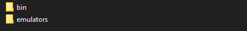

Résumé¶
Ce document décrit le processus de conception de mon projet Caiman. Caiman est inspiré par des applications comme Retropie, RetroArch ou Steam. RetroPie est une distribution pour raspberry comprenant des émulateurs pour d’anciennes consoles de jeu. RetroArch est lui une application servant de frontend pour émulateur, RetroArch est disponible sur plusieurs plateformes(Windows, macOS, Xbox).
Caiman est un projet comprenant deux parties distinctes. La première partie consiste en un site web PHP permettant de se créer un compte et de s’identifier. Le site web permet de consulter des informations sur les jeux présent sur le store ainsi que de pouvoir administrer les sites et le store.
La deuxième partie du projet est une application C# inspirée par le mode Big Picture de steam. Caiman sert de frontend pour différents émulateurs (Dolphin, PCSX2,etc). L’application permet de télécharger les différents jeux qui ont été ajoutés au store prévu pour le projet. Les jeux pris en charge sont ajoutés par des administrateurs via le site internet de Caiman. L’application permet de synchroniser les sauvegardes de l’utilisateur et cela peut importe sur quel pc, il lance l’application.
Abstract¶
This document describes the design process of my project Caiman. Caiman is inspired by applications like Retropie, RetroArch or Steam. RetroPie is a raspberry distribution including emulators for old game consoles. RetroArch is a frontend application for emulators, RetroArch is available on several platforms (Windows, macOS, Xbox).
Caiman is a project with two distinct parts. The first part consists of a PHP website allowing the visitor to create an account and to identify himself. The website allows you to consult information about the games on the store and to administer the site and the store.
The second part of the project is a C# application inspired by the Big Picture mode of Steam. Caiman is used as a frontend for different emulators (Dolphin, PCSX2, etc). The application allows you to download the different games that have been added to the store provided for the project. Supported games are added by administrators via the Caiman website. The application allows synchronizing the user’s save, no matter on which PC the user runs the application.
Remerciement¶
Pour commencer, je tenais en particulier à remercier les personnes qui ont pris le temps de me faire des retours sur Caiman. Sans les retours que j’ai reçus de leur part, Caiman ne serait pas aussi bien peaufiné qu’il l’est actuellement. Ensuite, j’aimerais remercier M.Maréchal et M.Schmid pour leurs conseils et leurs retours tout le long de mon travail de diplôme. Pour finir, j’aimerais remercier les autres élèves de ma classe avec qui j’ai passé de très bon moment et qui m’ont aussi donné des conseils pertinents. Je tiens en particulier à remercier M.Borel-Jaquet qui m’a énormément aidé avec la structure de l’API.
Légalité du projet¶
Caiman¶
Je pense qu’il est nécessaire d’aborder le sujet de la légalité de Caiman. Selon le droit Suisse, il n’est pas légal de mettre à disposition des fichiers sous droit d’auteur. Il est par contre légal de télécharger des films, séries ou jeux à condition de les utiliser dans un but privé. Caiman ne répondant pas à ces descriptions l’utilisation de l’application n’est pas conforme au droit Suisse.
Utilisation d’émulateurs¶
L’utilisation d’émulateurs n’est pas illégale en soi, en sachant que le code des émulateurs n’est pas la propriété de Sony ou de Nintendo. Par contre, il y a un petit point technique à détailler. L’émulateur PCSX2 doit pour fonctionner utiliser un BIOS de console de Playstation 2. Le BIOS de la Playstation 2 étant soumis à des droits d’auteur, il n’est en théorie pas légal de le distribuer en Suisse.
Je tiens donc à spécifier que Caiman est développé dans un seul but pédagogique. Il n’a aucune vocation à être distribué après la fin de mon travail de diplôme. L’application sera supprimée du serveur de l ‘école à la fin de mon travail. Par contre, il serait légal de distribuer le projet si je supprime la fonctionnalité de téléchargement de jeu.
Installation de Caiman utilisateur¶
Pour utiliser Caiman, il faut le télécharger depuis caiman.cfpt.info. Quand on télécharge l’application, l’utilisateur télécharge un fichier caiman.zip contenant l’application ainsi que les émulateurs, il n’y a donc rien d’autre à télécharger.
Quand l’utilisateur décompresse le fichier caiman.zip, il se retrouve avec un dossier Caiman contenant deux dossiers. Un contenant les émulateurs et un autre contenant les fichiers de Caiman.

Pour pouvoir exécuter Caiman, il faut se rendre dans le dossier “\bin\Debug\” et ensuite l’utilisateur va trouver le fichier “Caiman.exe”. Ce fichier permet de lancer l’application.
Caiman est donc une application “portable”, c’est-à- dire qu’elle ne nécessite pas d’une installation pour pouvoir être lancée.
Installation de Caiman serveur¶
Pour pouvoir déployer le site et l’API de caiman, il faut que le serveur ait les services suivant:
Apache2
PHP 7.4 (minimum)
mysql
Pour la base de données, il faut l’importer dans mysql sans faire de manipulation particulière.
Le site web et l’api doivent se trouver dans le même dossier, en sachant qu’il a des chemins relatifs entre les deux dossiers. ils ne peuvent donc pas être séparés pour l’instant.
Pour pouvoir uploader des jeux, il faut augmenter la taille que le PHP peut recevoir par formulaire, il faut également le configurer pour recevoir minimum 8GB. Pour finir, Il faut autoriser l’écriture dans les dossiers des sauvegardes et des jeux.